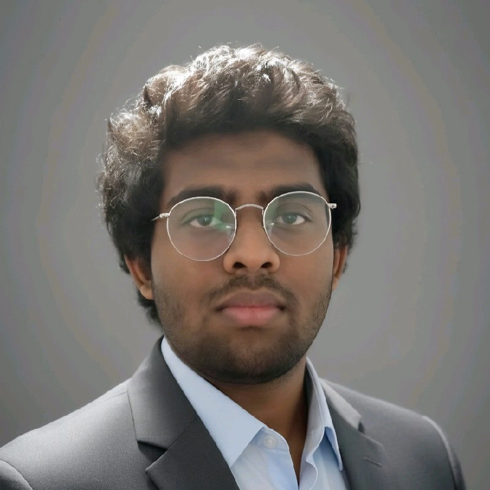

Ingénierie réseau, cybersécurité & télécom — avec une approche orientée lab, mesure et systèmes réels. Je conçois, segmente et sécurise des environnements réseau, du routage avancé au SOC/SIEM, avec une attention forte aux infrastructures exploitables.
Lab personnel actif : expérimentation 5G SA, scénarios attaque/défense, infrastructure virtualisée et automatisation IA pour l'analyse de logs et la détection d'anomalies.

Je travaille les télécommunications par la mesure, l'analyse RF et l'exploitation de systèmes réels. Mon terrain couvre le WiFi, la 5G, la fibre optique et la diffusion IP, avec une pratique en environnement de production chez SUD RADIO sur des liaisons analogiques et numériques.
Je recherche une alternance de 3 ans en école d'ingénieur sur des sujets d'ingénierie réseaux, SOC/SIEM, télécoms 5G/RF ou IA appliquée à la cybersécurité. Disponible pour échanger sur des environnements techniques exigeants.